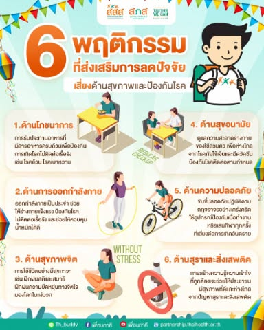

การป้องกันโรคและพฤติกรรมเสี่ยง

การป้องกันโรคสามารถทำได้โดยรักษาความสะอาดของร่างกาย ล้างมือให้สะอาด รับประทานอาหารที่ปรุงสุก และตรวจสุขภาพเป็นประจำ นอกจากนี้ควรหลีกเลี่ยงพฤติกรรมเสี่ยง เช่น การสูบบุหรี่ การดื่มเครื่องดื่มแอลกอฮอล์ การใช้สารเสพติด และการนอนดึกเป็นประจำ เพราะพฤติกรรมเหล่านี้สามารถส่งผลเสียต่อร่างกายและสุขภาพในระยะยาวได้